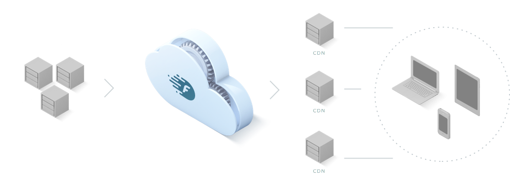
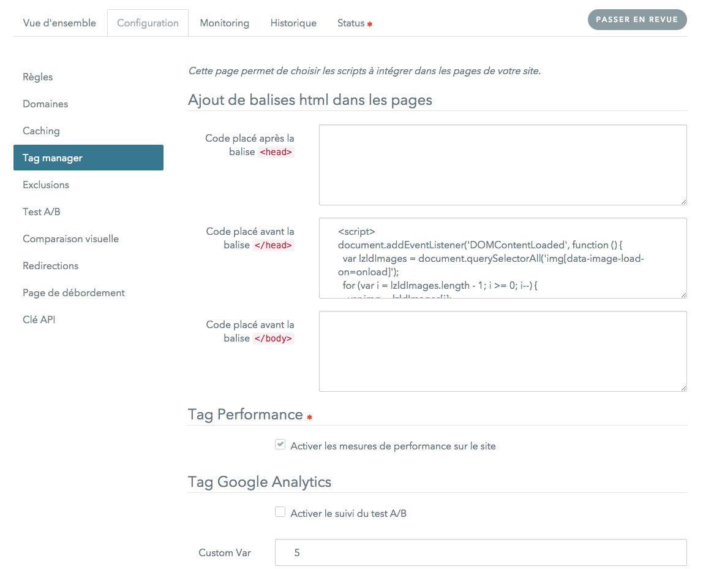

Formation
partenaire
Présentation Générale
Fonctionnement général

Architecture générale
Fonctionnement du moteur
Noms de domaine
(automatiquement créés)
fasterized.com
- par défaut pointe sur la plateforme (mode démo)
- si une config existe, pointe sur la plateforme ou sur l'origine
-
fasterized.net
- pointe toujours sur la plateforme
-
fasterize.it
- pointe sur les serveurs d'origine
-
s0.frz.io / s1.frz.io
- domaines "shardés", utilisés pour les objets statiques
- pointent sur la plateforme ou un CDN
les règles d'optimisation
Moins de requêtes
Des requêtes et réponses moins lourdes
Des objets chargés différemment
Gestion de cache avancée
- Url versioning
- Mise en cache de page dynamique (smart-cache)
- Servir une version de la page en cache pour les utilisateurs anonymes
Tour de l’interface
Dashboard du compte
- Liste des configurations du compte
- État du branchement des configurations
- État des optimisations des configurations
- Instructions de branchement des configurations
- Flush du cache des configurations
- Arrêt des optimisations des configurations
Dashboard du compte

Configuration
- Règles
- Domaines
- Cache
- Tag Manager
- Exclusions
- Redirections
- A/B Test
- Page de débordement
Configuration : règles
- Activation/désactivation des règles
- Options possibles : icône
- Exclusion d'URL pour une règle : icone

Configuration : domaines
- Configuration de l'origine
- Ajout de domaines secondaires (objets statiques)
Configuration : cache
Redéfinition des règles de mise en cache pour une URL
Configuration : Tag manager
Ajout de tags webperf dans la page
Configuration : exceptions
- Permet de ne pas optimiser une ou plusieurs URL.
- Exemples : backoffice, tracking
- Permet de configurer des URL à ne pas modifier dans une page HTML.
Configuration : Redirections
- Redirections des mobiles et/ou tablettes vers un autre site.
Configuration d’un site pas à pas
Ajouter une configuration
Tester le site
- Utiliser le mode preview : http://www.monsite.com.fasterized.com
Utiliser les paramètres de debug
Ajouter les paramètres suivants dans l'URL
?frz-all=falsepour tout désactiver sur une page?frz-[rule]=falsepour désactiver une règle sur une page?frz-[rule]-[option]=falsepour désactiver une option d'une règle sur une page?frz-persist-[rule]=falsepour désactiver une règle sur une page et sur la session- Voir doc en ligne pour la liste des règles
Tuning
- Activer / Désactiver des règles
Les règles qui posent problème sont en général
- DeferJS (
deferjs) - Concaténation (
concatjsetconcatcss) - Minification (
minifyjs,minifycssetminifyhtml) - Lazyloading (
lazyload)
Les règles peuvent désactivées pour des pages données ou globalement
- DeferJS (
- Exclure une ou plusieurs URL qui pose problème au niveau global
- Ajouter un nom de domaine secondaire
Si le site possède une partie sécurisée (HTTPS)
- Contacter le support pour ajouter un certificat
- Envoyer le certificat
Branchement du site
- Faire les dernières vérifications (tunnel d'achat, partie sécurisée)
- Faire la bascule des DNS
Gestion des cas avancés
Images non optimisées
- Pas de cache forcer le cache s'il n'est pas mis par défaut
- Images sur un autre domaine ajouter un domaine statique dans la configuration
Redirection / Bare domain (domaine "nu")
- Fasterize ne prend pas en compte les bares domains
- Possibilité de lancer un test en contactant le support
Les images sont trop dégradées
Certaines images, notamment certains dégradés, peuvent subir une modification trop visible
- Exclure les images concernées en les mettant en blacklist de la compression d'image
- Exclure les images concernées de façon globale
- Désactiver PNG24 PNG8
- Désactiver la compression des images
Le slideshow met trop de temps à apparaître
- Désactiver le lazyloading sur la page (blacklist)
- Désactiver le deferjs sur la page (blacklist)
Mettre en cache des pages identiques pour tous les utilisateurs
- Si le site est "statique", il est possible de mettre en cache les pages en ajoutant
.*dans les règles de caching
Connaitre le status de la réponse
Un header x-fstrz est ajouté dans chaque réponse traitée par Fasterize
- o : optimisée
- dc,o : optimisée, cache dynamique (fonctionnement interne du moteur)
- sc : la page est cachée via le SmartCache (Cache + Ajax)
- clc : la page est cachée via le Cookie Less Cache
- w,p : optimisation en cours
- t : timeout, l’optimisation a pris trop de temps, la page renvoyée n’est pas optimisée
- e : error, l’optimisation a échoué, la page renvoyée n’est pas optimisée
Obtenir les adresses IP
Si la plateforme Fasterize est down
.fasterized.com domain est géré par Cedexis et est dynamique.
- Les requêtes sont automatiquement redirigées vers le serveur d'origine
- http://status.fasterize.com/ donne le status de la plateforme
And if you can't manage ...
Contact support at support@fasterize.com!
- Inform of a global redesign
- Inform of a SSL certificate expiration
- Inform of a server migration